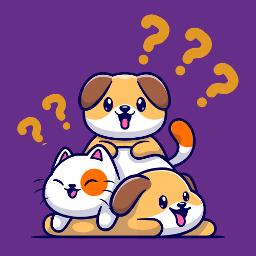

<ion-content class="color">
    <div id="header">
      <div id="logo">
        
        <h2>Pet Customization <br><span>Questionnaire</span></h2>
        <p>To easily customize your pet dashboard, <br>we recommend answering a few questions.</p>
        <ion-button class="getstarted" expand="block" (click)="navigateToPetques()">Start now</ion-button>
      </div>
    </div>
  </ion-content>